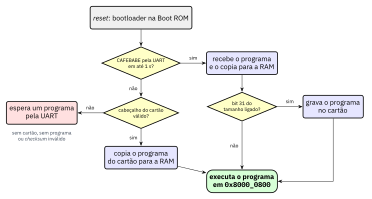

Cartão microSD¶
Visão Geral¶
O SoC usa o slot de microSD da placa (Nexys A7 ou Nexys 4) para guardar um programa, como a flash de um microcontrolador. Depois de gravado, a placa inicia com ele sozinha, sem o computador.
| Parte | Arquivo | Função |
|---|---|---|
| Mestre SPI | rtl/perips/sd/sd_spi.vhd |
Transfere bytes com o cartão (modo SPI do cartão, SPI modo 0) |
| Bootloader | fpga/sw/platform/bootloader/boot.c |
Inicializa o cartão, grava e carrega o programa |
| Uploader | fpga/upload.py |
--save grava o programa no cartão; --erase-sd apaga |
| Gravação pelo computador | fpga/sd_image.py |
Grava o mesmo formato com o cartão num leitor USB |
Nada muda para quem não usa o cartão. Um upload normal (GUI-TCC, Eureka, make upload) só carrega na RAM, como antes; o cartão só é gravado quando o upload pede. Sem cartão no slot, a placa espera pela UART, como sempre.
Fluxo de Boot¶

Os carregadores (upload.py, GUI-TCC, Eureka, AXON-OS) resetam a placa pelo controlador de depuração e mandam a magic word cerca de 0,1 s depois do [BOOT], dentro da janela de 1 s. Um programa gravado no cartão não atrapalha um upload novo.
O bootloader mostra o que aconteceu na UART:
| Mensagem | Significado |
|---|---|
SD: carregado |
Programa do cartão carregado; a seguir vem a saída do programa |
SD: sem cartao |
Cartão ausente ou não respondeu à inicialização |
SD: sem programa |
Cartão sem cabeçalho válido (nunca gravado ou apagado) |
SD: checksum invalido |
O programa no cartão não confere com o cabeçalho; não é executado |
SD: gravado / ja gravado |
Upload com --save: programa gravado (ou igual ao que já estava) |
SD: sem espaco antes da particao |
O programa não cabe antes da primeira partição; nada foi gravado |
SD: apagado |
--erase-sd: cabeçalho apagado |
Uso¶
make upload SW=blink SAVE=1 # envia, grava no cartão e executa
make sd-erase # apaga: a placa volta a esperar pela UART no boot
# Pelo computador, com o cartão num leitor (o dispositivo é o cartão inteiro, não a partição)
sudo python3 fpga/sd_image.py /dev/sdX build/fpga/bin/blink.bin
sudo python3 fpga/sd_image.py /dev/sdX --erase
Gravar de novo o mesmo programa não reescreve o cartão (SD: ja gravado).
Formato no Cartão¶
Sem sistema de arquivos: blocos fixos de 512 bytes, logo depois do MBR.
| Bloco | Conteúdo |
|---|---|
| 0 | MBR do cartão (nunca escrito) |
| 1 | Cabeçalho: "RVSD" (0x44535652), tamanho em bytes, checksum, ~"RVSD" (little endian) |
| 2... | O programa (até 254 KB, 508 blocos) |
O checksum é uma soma com rotação, palavra a palavra: sum = rotl(sum, 1) + palavra.
Cartões formatados pelo padrão da SD Association deixam livre o começo do cartão: a primeira partição começa no bloco 8192 (4 MB). Por isso o cartão continua funcionando normalmente no computador. Há cartões que vêm com a partição no bloco 32 (o cartão dos testes, por exemplo): sobram só 31 blocos, programas de até ~15 KB. Nesse caso, ou o cartão é reparticionado com a partição em 4 MB, ou vira um cartão dedicado ao SoC, apagando a tabela de partições (zerar o bloco 0: sudo dd if=/dev/zero of=/dev/sdX bs=512 count=1 conv=fsync). Antes de gravar, o bootloader (e o sd_image.py) lê a tabela de partições e recusa se o programa invadir a primeira partição, ou se o cartão tiver um FAT direto no bloco 0, sem tabela de partições.
A gravação primeiro apaga o cabeçalho, depois grava o programa e só no fim grava o cabeçalho novo: se a energia cair no meio, o cartão fica sem programa, nunca com um programa pela metade.
O Mestre SPI¶
Pinos¶
| Sinal do SoC | Pino (A7 e Nexys 4) | Sinal do cartão |
|---|---|---|
SD_SCK_o |
B1 | SCK |
SD_CMD_o |
C1 | CMD (MOSI) |
SD_DAT0_i |
C2 | DAT0 (MISO), com pull-up |
SD_DAT_o(3) |
D2 | DAT3 (CS, ativo em nível baixo) |
SD_DAT_o(2..1) |
F1, E1 | DAT2, DAT1 (sem uso no modo SPI, em nível alto) |
SD_RESET_o |
E2 | Alimentação do cartão (1 = desligado) |
SD_CD_i |
A1 | Detecção do cartão (0 = cartão no slot), com pull-up |
Registradores (0x7000_0000)¶
| Offset | Nome | Acesso | Descrição |
|---|---|---|---|
0x00 |
DATA |
RW | Escrita: envia o byte (ignorada com BUSY); leitura: último byte recebido |
0x04 |
CTRL |
RW | Bit 0 CS: 1 = cartão selecionado; bit 1 PWR: 1 = cartão alimentado |
0x08 |
DIV |
RW | f_SCK = 100 MHz / (2 (DIV + 1)); 124 após o reset (400 kHz); mínimo 1 |
0x0C |
STATUS |
RO | Bit 0 BUSY: transferência em curso; bit 1 CD: cartão no slot |
O controlador só move bytes; os comandos do cartão ficam no software. Cada transferência é full duplex: o byte escrito em DATA sai pelo MOSI enquanto o byte do cartão entra pelo MISO.
uint8_t spi(uint8_t b) {
SD_REG_DATA = b;
while (SD_REG_STATUS & SD_STATUS_BUSY);
return SD_REG_DATA;
}
No SPI modo 0, o SCK fica em 0 em repouso, o cartão amostra o MOSI na subida e muda o MISO na descida. O controlador amostra o MISO na subida, a partir de um registrador (por isso DIV mínimo 1). O bootloader inicializa o cartão a 400 kHz, como manda a especificação, e depois passa para 12,5 MHz (DIV = 3). Nessa velocidade o tempo é dominado pela CPU, não pelo SPI.
Inicialização do Cartão (Modo SPI)¶
| Passo | Comando | Resposta esperada |
|---|---|---|
| Liga o cartão, espera 20 ms, 80 clocks sem CS | - | - |
| Entra no modo SPI | CMD0 |
0x01 (ocioso) |
| Versão do cartão | CMD8 0x1AA |
Sem "comando ilegal" + eco 0x1AA (SD v2); "comando ilegal" = SD v1 |
| Sai do estado ocioso (até 1 s) | CMD55 + ACMD41 (HCS nos cartões v2) |
0x00 |
| Tipo de endereço | CMD58 |
Bit CCS do OCR: 1 = SDHC/SDXC (endereço em blocos) |
| Blocos de 512 bytes (só cartões antigos) | CMD16 512 |
0x00 |
Leitura de bloco: CMD17, espera o token 0xFE, 512 bytes e 2 de CRC. Gravação: CMD24, token 0xFE, 512 bytes, 2 de CRC, resposta xxx00101 (aceito) e espera o cartão soltar o MISO (ocupado em 0). Todas as esperas têm limite de tempo pelo mtime do CLINT, então um cartão ausente ou com defeito nunca trava o boot.
CRC. Pela especificação, no modo SPI o cartão só confere o CRC do CMD0 e do CMD8. Na prática há cartões que conferem tudo: o SanDisk Ultra microSDHC de 32 GB usado nos testes recusa o ACMD41 sem CRC (R1 0x08) e os blocos gravados sem CRC (resposta 0x0B). Por isso o bootloader manda o CRC7 certo em todos os comandos e o CRC16-CCITT em todos os blocos gravados (o CRC dos blocos lidos não é conferido). O mesmo cartão também responde 0x00 ao CMD8, em vez de 0x01: o bootloader considera SD v2 qualquer resposta sem o bit de "comando ilegal".
Medido na Nexys A7 com esse cartão: inicialização + gravação de 5 KB em 65 ms; inicialização + leitura em 51 ms (a inicialização inclui 40 ms de espera da alimentação).
Verificação¶
make test-unit-sd_spi usa um modelo de cartão (escravo SPI modo 0) no testbench:
| Teste | O que confere |
|---|---|
test_reset |
Cartão desligado, CS alto, SCK em 0, MOSI em 1, DIV = 124 |
test_ctrl_and_card_detect |
PWR e CS nos pinos; CD segue o pino de detecção |
test_transfer |
Um byte em cada sentido, com o período do SCK programado |
test_write_while_busy |
Escrita em DATA durante a transferência é ignorada |
test_random_stream |
64 bytes aleatórios nos dois sentidos, com DIV de 1 a 9 |